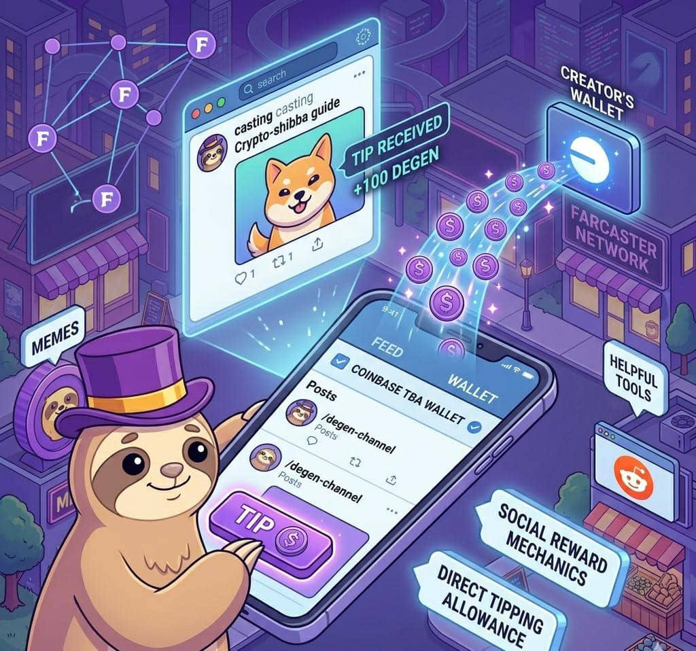

The Degen App
Direct tipping, social reward mechanics, and how creators get paid in $DEGEN.
The Degen App is a social platform designed to help people earn rewards for creating content online.
It is closely connected to the Degen (DEGEN) ecosystem and built around decentralized social networks like Farcaster.
The main idea of the app is simple: Good content should earn real rewards.
Instead of only receiving likes or comments, creators can receive crypto tips in $DEGEN.
The Degen App is a social app and tipping platform where users can:
- post content
- join discussions
- interact with other community members
- tip creators using $DEGEN
The app acts like a lightweight social client, similar to Reddit style discussion forums but connected to crypto wallets.
This means conversations happen normally, but payments and rewards happen directly on the blockchain.
One of the most important features of the Degen App is direct tipping.
Direct tipping allows users to send $DEGEN tokens instantly to a creator whose post they like.
For example:
A user posts a helpful thread.
Another user enjoys the post.
Instead of only liking the post, they tip the creator with $DEGEN.
This makes content creation more rewarding.
On some versions of the app, tipping can even happen automatically when you like a post, making the process extremely simple.
The Degen App uses token incentives to encourage people to create valuable content.
These reward mechanics include:
Creator Tips
Creators receive tokens directly from other users.
Daily Tip Allowances
Some users receive a daily tipping balance they can distribute to good posts.
For example:
A user may receive an allowance of $DEGEN each day.
They can give those tokens to posts they like.
This system helps reward active and helpful members of the community.
The Degen App is connected to crypto wallets.
Users usually connect wallets such as:
- Coinbase Wallet
- MetaMask
- other Base compatible wallets
Some versions of the app also support Coinbase TBA wallets, allowing users to tip directly from their wallet balance.
Because of this integration:
- tips go directly to the creator's wallet
- transactions happen on the blockchain
- users remain in control of their funds
All tipping transactions happen on Base.
Base is important because it provides:
- very low transaction fees
- fast confirmation times
- strong compatibility with Ethereum tools
This allows the app to support many small transactions, which is perfect for tipping.
The reward system encourages users to create better posts.
Because people can earn tokens, creators are motivated to share:
- educational threads
- helpful crypto insights
- entertaining memes
- creative content
This helps improve the quality of discussions in the community.
Instead of chasing likes, users are motivated to create content that others truly value.
The Degen App is also important for expanding the ecosystem.
It helps:
- onboard new users to Farcaster
- introduce people to crypto tipping
- grow the $DEGEN community
Developers designed the app to be simple and lightweight, focusing mainly on conversations, tipping, and community interaction.
